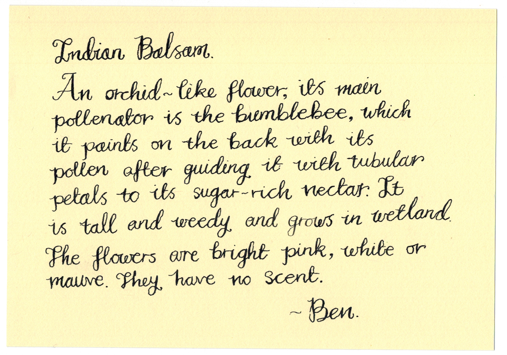
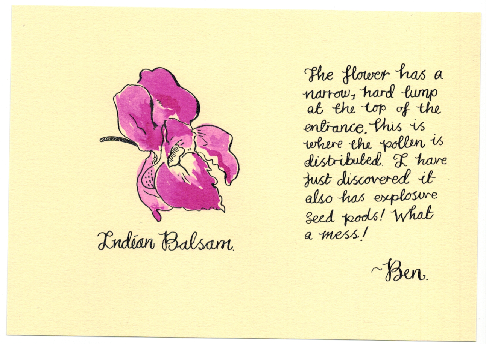

Indian Balsam
Impatiens glandulifera
These are a collection of cards I wrote as an extension to my growing flower collection. Over the early summer, as a cure for being locked in the house over furlough and then eventually working from home, I went out into the paths around my house and collected wild flowers for documentation. It was an excuse to walk about more than anything. Most notable were the honeysuckle, the blue meadow crane's-bill and the Indian balsam.
Here, for your viewing pleasure, is my writeup of my discoveries about the Indian balsam.
-Polyducks (Ben)
 